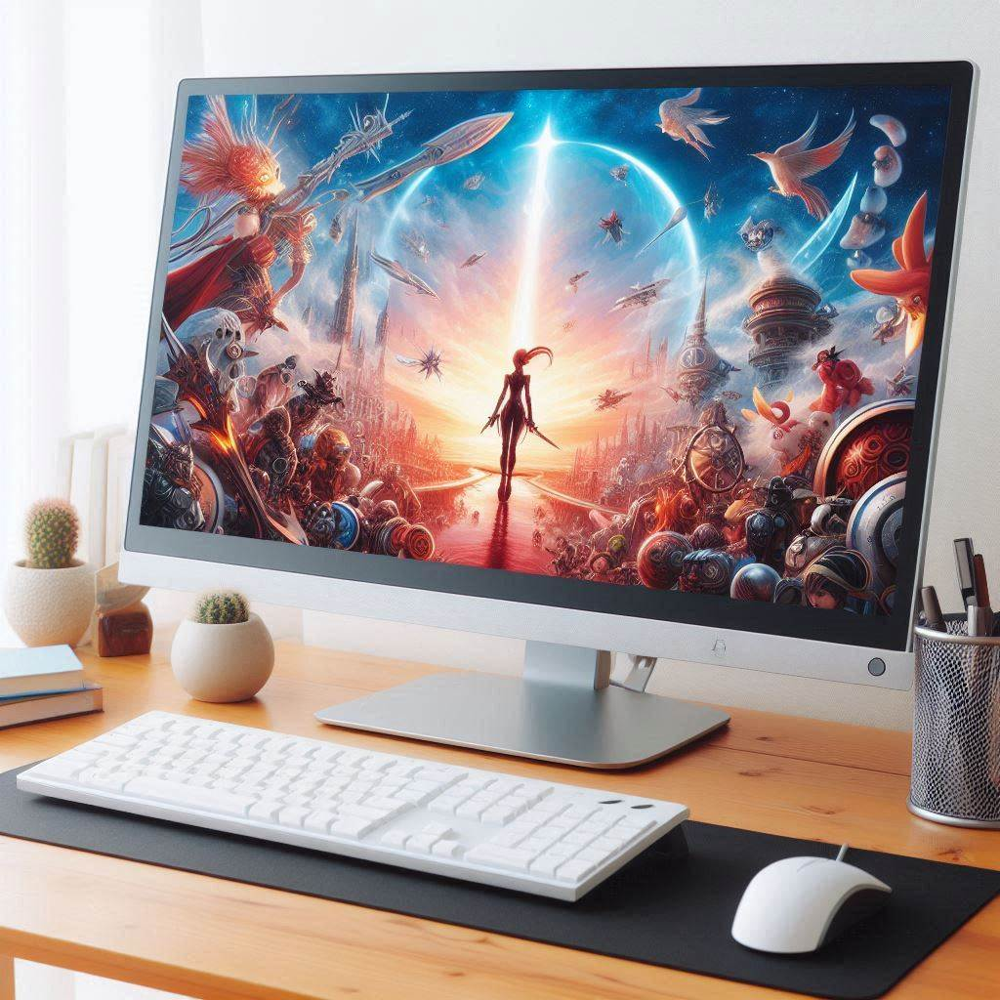

Diccionario
Nodo

- Definición
-
Dispositivos direccionables a nivel de red.
- Ejemplo
-
Un ordenador, una impresora, un router...
Dispositivo de acceso al medio
- Definición
-
Dispositivos NO direccionables. Funcionan al nivel de las capas de enlace y
física. Dan un punto de acceso a un medio de transmisión - Ejemplo
-
Un Switch, un punto de acceso inalámbrico...
Enlace

- Definición
-
Canal de transmisión que une varios nodos adyacentes entre sí. Pueden ser punto a punto o de difusión
- Ejemplo
-
Un cable UTP, o el Aire si la transmisión es wireless
Tarjeta de Red
- Definición
-
La tarjeta de red (NIC) es donde se implementan los servicios del la capa de enlace.
- Ejemplo
-
Un ordenador, una impresora, un router...